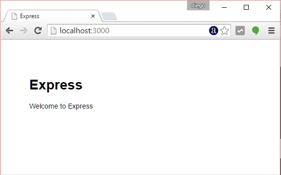

El creador del framework Express ha implementado una aplicación (también esta aplicación está escrita en Node.js) que tiene por objetivo crear una estructura mínima de un proyecto que utilice Express (un conjunto de carpetas y archivos)
Si bien esto no es obligatorio como vimos en conceptos anteriores es muy beneficioso conocerla para que nosotros podamos definir como queremos organizar los archivos de un proyecto grande.
El primer paso será instalar la aplicación 'express-generator'.
La aplicación 'express-generator' se ejecuta desde la consola de nuestro sistema operativo y no es un módulo que se instala en una aplicación particular. Para instalar una aplicación en Node.js que se la pueda ejecutar desde la linea de comandos también utilizamos el 'npm' pero le pasamos un parámetro extra '-g' (global), instalemos el programa express-generator:
npm install express-generator -g
Es muy importante no olvidarse del parámetro -g
Ahora que tenemos la aplicación 'express-generator' nos posicionamos en el directorio 'c:\ejerciciosnodejs' (o el directorio donde esta almacenando todos sus proyectos) y procederemos a crear nuestra primer aplicación Node.js utilizando Express y su generador de código:
c:\ejerciciosnodejs> express ejercicio21 --hbs
Estamos llamando al programa que acabamos de instalar que se llama 'express' y le pasamos dos parámetros, el primero indica el nombre de nuestro proyecto y el segundo el sistema de plantillas que utilizaremos para generar nuestras páginas dinámicas.
Ya tenemos creado la carpeta ejercicio21 y dentro de esta una serie de archivos y subcarpetas:
ejercicio21
app.js
package.json
bin
www
public
images
javascripts
stylesheets
router
index.js
users.js
views
error.hbs
index.hbs
layout.hbs
Si observamos dentro de todas las carpetas que ha creado el generador de código 'express' no aparece la carpeta 'node_modules'. Es decir que todavía nos hace falta instalar el framework Express. Aquí es donde entra a jugar este nuevo archivo llamado package.json.
Si abrimos este archivo package.json:
{
"name": "ejercicio21",
"version": "0.0.0",
"private": true,
"scripts": {
"start": "node ./bin/www"
},
"dependencies": {
"body-parser": "~1.13.2",
"cookie-parser": "~1.3.5",
"debug": "~2.2.0",
"express": "~4.13.1",
"hbs": "~3.1.0",
"morgan": "~1.6.1",
"serve-favicon": "~2.3.0"
}
}
"name": Indicamos el nombre de proyecto
"version": Indicamos la versión del proyecto.
"start": Indicamos el archivo que se debe ejecutar para arrancar el proyecto
"dependencies": Indicamos todos los otros módulos que se requieren en nuestro proyecto.
Como podemos observar en "dependencies" aparece el framework 'express' y el módulo 'body-parser' que hemos utilizado en conceptos anteriores.
Ahora veremos que podemos instalar todos estos módulos con un único comando, nos posicionamos en el directorio ejercicio21 y ejecutamos:
c:\ejerciciosnodejs\ejercicio21>npm install
Cuando llamamos a 'npm install' sin ningún otro parámetro lo que hace es buscar el archivo 'package.json' y proceder a instalar todos los módulos especificados en la propiedad 'dependencies'.
Ahora ya tenemos creado la carpeta 'node_modules' con las 7 carpetas que coinciden con las dependencias especificadas en el archivo json:
body-parser
cookie-parser
debug
express
hbs
morgan
serve-favicon
Podemos ejecutar nuestra aplicación mínima creada con el 'express-generador':
c:\ejerciciosnodejs\ejercicio21>node ./bin/www
Tener en cuenta que el generador define como puerto el valor 3000 y no el 8888 que utilizamos en ejemplos anteriores.
Y ya podemos solicitar al servidor la página raíz del sitio (por el puerto 3000):

Ahora podemos ver otra forma de iniciar a nuestro proyecto en Node.js cuando definimos el archivo package.json:
En lugar de escribir:
c:\ejerciciosnodejs\ejercicio21>node ./bin/www
Escribimos:
c:\ejerciciosnodejs\ejercicio21>npm start
Recordemos que en el archivo json hay una propiedad start donde definimos el archivo que inicia nuestra aplicación:
"scripts": {
"start": "node ./bin/www"
},
Hasta aquí hemos visto todo lo que podemos hacer en forma automática, en conceptos sucesivos veremos cada uno de los archivos y carpetas fundamentales para organizar un proyecto Node.js con 'Express'.
Este proyecto lo puede descargar en un zip con todos los archivos desde este enlace : ejercicio21